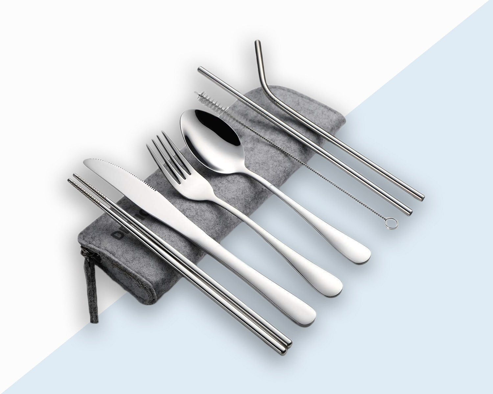
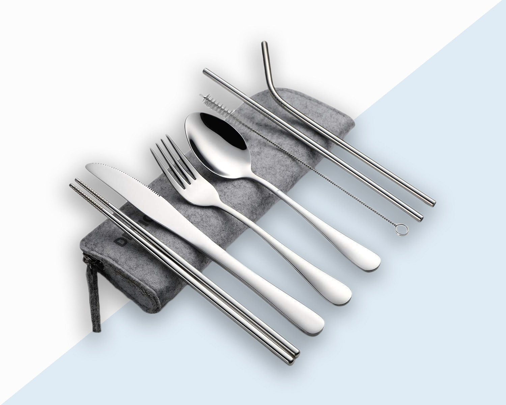

Kits
Beginner Kit
Looking to do minimal cooking but still need some supplies? This kit should be a foundation for your style.
Intermediate Kit
If you want to be able to cook on occassion, this kit should provide the tools you need on a budget.
Expert Kit
If you're looking to turn your kitchen into a spiritual restaurant, then the expert kit is what you need.
 
